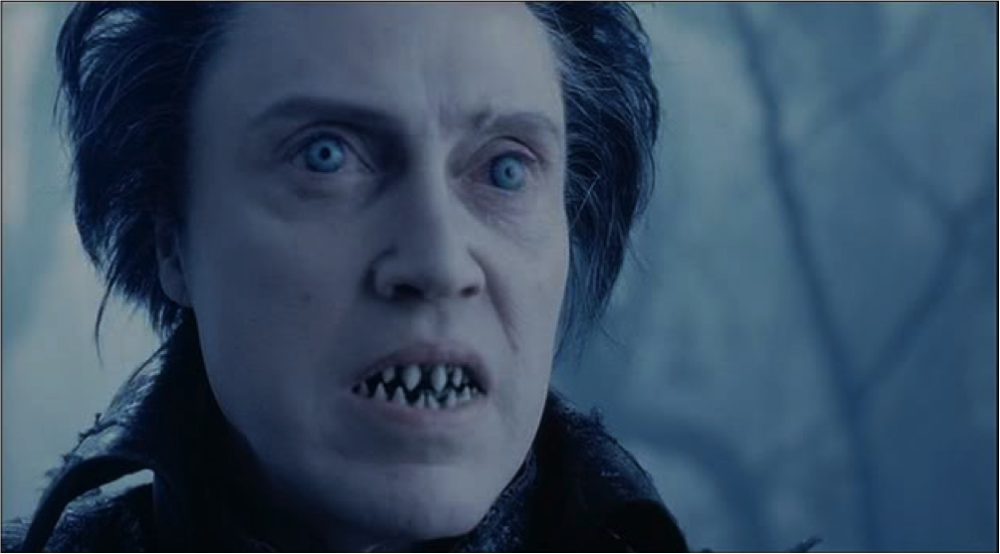

 A long time ago, there was a boy that became a man. A raging alcoholic man. It wasn't until thousands of years later when Ichabod Crane came to town that the alcoholism was released, and the horseman was aloof killing people that were alone in the woods. Villagers warned people not to walk through the woods, but it was the fastest way home for many. Needless to say, these were all victims of the horseman's alcoholic rage and anger. The headless horseman, in his head hayday, used to gallop through the woods; drinking and smoking: He was an absolute unstoppable force.

Many moons forward into time, when the dinosaurs were extinct, there was a man named Ichabod Crane that wanted to find the headless horseman. The rumor mill was chock full of gossip regarding the headless horseman's alcohoic tendencies. Ichabod Crane was himself a sober man, and wished to help the horseman aleviate his troubles and return to the ground where he should reside.